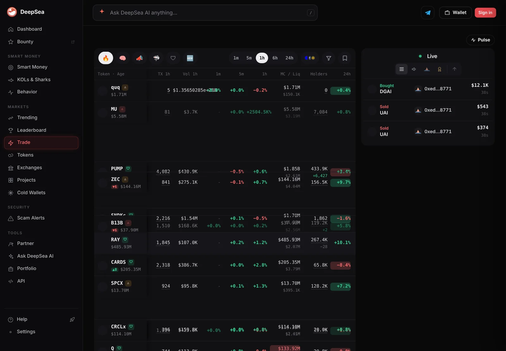

Sharks bought $10.25 million of WLD on Optimism in a day while its price fell 4%
Thirteen big wallets made 240 WLD trades in 24 hours and net bought about $4.31 million. WLD itself fell 4% on CoinGecko.
Key points
- In the 24 hours to 6:36 a.m. ET on November 5, 2026, 13 shark wallets bought $10.25 million of WLD on Optimism and sold $5.94 million in 240 trades, DeepSea's live feed shows.
- That is about $4.31 million net bought. On November 4 at 12:37 a.m. ET, the 24-hour count was $3.05 million bought.
- CoinGecko showed WLD at $0.3748 at 6:39 a.m. ET, down 4.0% in 24 hours.
 What DeepSea's data shows
What DeepSea's data shows
DeepSea's live feed adds up trades by wallets it tags as sharks (large, active traders). LC Insight read it at 6:36 a.m. ET on November 5, 2026. DeepSea does not name these wallets, so neither do we.
WLD, the token of the Worldcoin project, was the most bought token in the 24-hour list. Thirteen sharks bought $10.25 million of it on Optimism and sold $5.94 million in 240 trades, about $4.31 million net bought. The last hour was flat: three wallets bought $107,421 and sold $109,465.

Data: DeepSea (desea.io), checked November 5, 2026, 6:36 a.m. ET.
How the count grew
We first flagged WLD buying in our November 4 report: 11 sharks, $3.05 million bought and $1.89 million sold in 122 trades. Since then the rolling 24-hour count has kept climbing. At 12:38 a.m. ET on November 5 it stood at $10.66 million bought and $6.15 million sold. Six hours later it was slightly lower but still about three times the November 4 level.
Shark WLD trades on Optimism, rolling 24 hours
US$ million
Times ET. Source: DeepSea live feed.
Price went the other way
Heavy shark buying did not lift the price. CoinGecko showed WLD at $0.3748 at 6:39 a.m. ET, down 4.0% in 24 hours. On November 4 at 12:40 a.m. ET it was $0.3800.
DeepSea's wallet totals on Optimism are not split by token, so we cannot say which wallet bought the most WLD. Several of the chain's busiest sharks also trade USD₮0 and OP there.
Why it matters
Sharks are a small group, and two-way trading of about $16.2 million in a day is large next to their usual WLD flow. The net buying is real money, but sellers elsewhere in the market were stronger.
LC Insight analysis
This section is our reading of the facts above, not a statement of fact.
- We think the jump in two-way volume matters more than the net figure. Sharks are trading WLD actively, not only collecting it.
- Buying into a falling price can mean conviction or simply a longer entry. The data does not show which.
- One day of buying is not a trend. A high 24-hour count after the price stops falling would say more.
What's next
- Whether the 24-hour WLD count stays above $10 million
- Whether net buying turns into a price move on CoinGecko
Disclaimer. This article is based on public information and the sources listed below as of the update time shown. It is for information only and is not investment, legal or tax advice. Figures may change as companies and authorities publish new data.